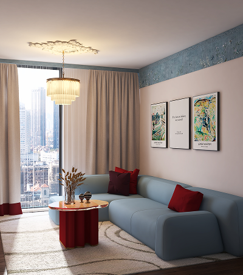
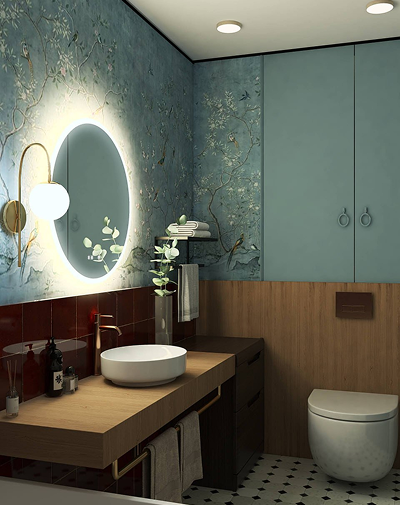
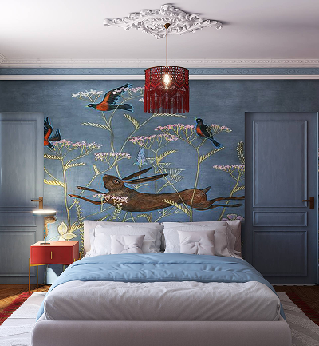
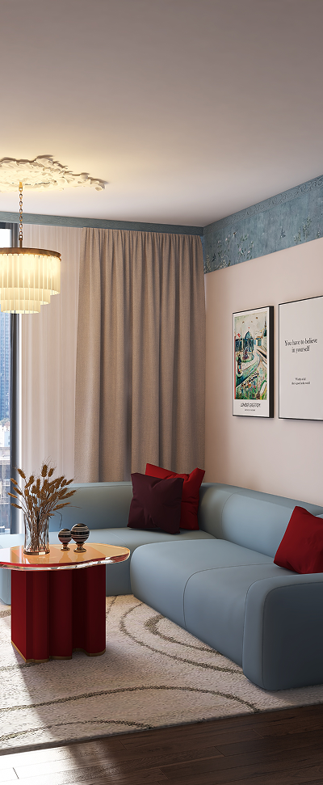
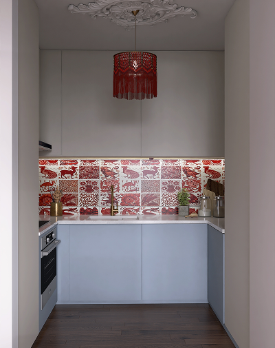
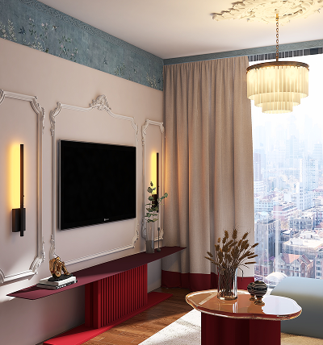

Дизайн-проект квартиры в г. Санкт-Петербург, ЖК "Северный ветер". Данный дизайн-проект интерьера представляет собой гармоничный синтез классической архитектуры и живой природной эстетики. Доминантой становятся глубокие голубые и насыщенные красные оттенки, ведущие сложный цветовой диалог.
Элегантная лепнина на стенах и потолке создает благородный фон, на котором «оживают» стилизованные элементы фауны — от изящных барельефов до декоративных деталей мебели и аксессуаров. Проект создает атмосферу динамичной роскоши, где классика обретает современный характер и эмоциональную глубину.




